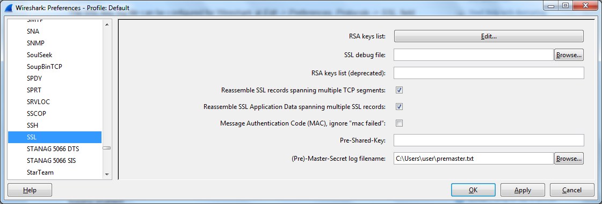

Wireshark解密SSL的另一种方法
上篇文章简单提到了如何使用Wireshark抓取SSL流量，但Wireshark解密SSL除了需要有网站私钥，还只能对RSA这样的传统密钥交互机制进行解密，对于Google大力提倡的ECDHE_RSA这种Forward secrecy密钥交互协议就无效了（forward secrecy，前向安全或正向安全，就是设计来防止这种监听的，这不是Wireshark能够解决的问题）。
对于这种情况我们可以设定一个MITM proxies，比如Fiddler或mitmproxy.
但还有个更简单的方法就是利用Chrome和Firefox的SSLKEYLOGFILE环境变量和Wireshark的(Pre)-Master-Secret功能:
-
设定环境变量
export SSLKEYLOGFILE=/home/user/premaster.txt
Windows在系统属性->高级->环境变量中设置。 -
设置Wireshark
在Edit->Preferences->Protocols->SSL->(Pre)-Master-Secret log filename中指定刚才的premaster.txt文件。  -
正常打开Chrome或Firefox，访问HTTPS网站，你会看到premaster.txt里面记录了浏览器使用的临时密码，有了这个Wireshark自然可以解密SSL流量了。
参考:
https://wiki.wireshark.org/SSL
http://security.stackexchange.com/questions/35639/decrypting-tls-in-wireshark-when-using-dhe-rsa-ciphersuites/42350#42350
https://jimshaver.net/2015/02/11/decrypting-tls-browser-traffic-with-wireshark-the-easy-way/
https://www.imperialviolet.org/2011/11/22/forwardsecret.html
https://www.imperialviolet.org/2012/06/25/wireshark.html